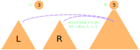

CS3460: Data Structures
Priority Queues
CS3460: Data Structures & Algorithms
Priority Queues
Review
- Abstract Data Types
- Sequences
- Stacks & Queues
- Sets & Dictionaries
- Maps
- Priority Queues
- Implementations (Concrete)
- Arrays
- Linked Lists
- Hash Tables
- Binary Search Trees
- Binary Heap
Priority Queues
- In a simple queue, the order of elements is maintained (FIFO)
- In a priority queue, the element with highest priority (usually defined as having the lowest key) is the first to be removed
- Many use cases:
- Scheduling — Manage a set of tasks, where you always perform the highest-priority or highest-urgency task next.
- Sorting — Insert $n$ elements into a priority queue and they can be removed in sorted order.
- More sophisticated algorithms, such as Dijkstra's shortest path algorithm, use priority queues.
Priority Queue Operations
- All priority queues support:
- insert(e, k): insert a new element $e$ with key $k$
- remove-min: remove and return the element with the minimum key
- In practice (thanks to Dijkstra's algorithm), many support:
- decrease-key(e, Δk): given a pointer to element $e$, reduce $e$'s key by $\Delta k$
- Some priority queues also support:
- increase-key(e, Δk): increase $e$'s key by $\Delta k$
- delete(e): remove $e$ from the priority queue
- find-min: return a pointer to the element with the minimum key
Redundancy Among Operations
- How can we implement increase-key and decrease-key?
- delete the node and re-insert with a new key
- How can we implement delete?
- decrease-key to $-\infty$, then remove-min
- How can we implement remove-min?
- find-min, then delete the found node
- How can we implement find-min?
- remove-min to find the minimum, then re-insert the node
Priority Queue Implementations
- There are a variety of simple ways to implement the priority queue abstract data type as a concrete data structure:
| insert(e, k) | remove-min | |
| unsorted array or linked list | $O(1)$ | $O(n)$ |
| sorted array or linked list | $O(n)$ | $O(1)$ |
| balanced binary search tree | $O(\lg n)$ | $O(\lg n)$ |
| binary heap | $O(\lg n)$ | $O(\lg n)$ |
The Binary Heap
- A binary heap is an almost-complete binary tree that satisfies the heap property: for each element $e$, key(parent(e)) ≤ key(e)
- This means that the minimum element always resides at the root
- All levels full except the last, which is filled from left to right
- That means we don't need a typical node-based structure!
The Binary Heap
- Instead, we can store elements in an array $A[0 \dots n-1]$
- Surprisingly easy to move around this array in a tree-like fashion!
- parent(i) = $\lfloor (i-1)/2 \rfloor$
- left-child(i) = $2i + 1$ ; right-child(i) = $2i + 2$

Heap Operations
- All binary heap operations are built from two fundamental operations
- sift-up(i) (or up-heap): repeatedly swap element $A[i]$ with its parent as long as $A[i]$ violates the heap property with respect to its parent
- sift-down(i) (or heapify): as long as $A[i]$ violates the heap property with one of its children, swap $A[i]$ with its smallest child
- Both run in $O(\lg n)$ since the height of an $n$-element heap is $O(\lg n)$
Heap Operations
- Now the remaining operations are easy to define in terms of sift-up and sift-down
- insert: place new element at $A[n+1]$, then sift-up(n+1)
- remove-min: swap $A[n]$ and $A[1]$, then sift-down(1)
- decrease-key(i, Δk): decrease $A[i]$ by $\Delta k$, then sift-up(i)
- increase-key(i, Δk): increase $A[i]$ by $\Delta k$, then sift-down(i)
- delete(i): swap $A[i]$ with $A[n]$, remove, sift-up(i), sift-down(i)
- All of these clearly run in $O(\lg n)$ time
- More generally: modify the heap, then fix any violation of the heap property with one or two calls to sift-up or sift-down
Caveat: you can't find elements easily in a heap (unless it's the min)
Building a Binary Heap
- We could build a binary heap in $O(n \lg n)$ time using $n$ calls to insert.
- Another way to build a heap: start with our $n$ elements in an array $A[1 \dots n]$ (with no particular ordering), then call sift-down(i) for each $i$ from $n$ to $1$.
- Remarkable fact #1: This will build a valid heap!
- Remarkable fact #2: This only takes $O(n)$ time!
Bottom-Up Heap Construction
- The key property of sift-down is that it fixes an isolated violation of the heap property at the root. Using induction, it is easy to prove that a "bottom-up" construction yields a valid heap.
Bottom-Up Heap Construction
- To analyze the runtime of this construction, note the following:
- At most $n/2$ elements reside at the bottom level of the heap. No work needs to be done to them.
- At most $n/4$ elements reside at the 2nd lowest level of the heap. Only 1 unit of work done to them by sift-down.
- At most $n/8$ elements reside at the 3rd lowest level of the heap. Only 2 units of work done to them by sift-down.
- So total time $\le T = (n/4) + 2(n/8) + 3(n/16) + \dots$
- Carrying this sum to infinity gives us an upper bound.
- Claim: $T = O(n)$
"Shifting" Technique for Summation
\[
\begin{align*}
& T & = & (n/4) & + & 2(n/8) & + & 3(n/16) & + & 4(n/32) & + & \dots \\
-~& T/2 & = & & & (n/8) & + & 2(n/16) & + & 3(n/32) & + & \dots \\
\hline
& T/2 & = & (n/4) & + & (n/8) & + & (n/16) & + & (n/32) & + & \dots \\
\end{align*}
\]
repeating this process...
\[
\begin{align*}
& T & = & (n/2) & + & (n/4) & + & (n/8) & + & (n/16) & + & \dots \\
-~& T/2 & = & & & (n/4) & + & (n/8) & + & (n/16) & + & \dots \\
\hline
& T/2 & = & (n/2) \\
\therefore~~ & T & = & n \\
\end{align*}
\]
Heapsort
- Any priority queue can be used to sort.
- Just use $n$ inserts followed by $n$ remove-mins.
- The binary heap gives us a nice way to sort in $O(n \lg n)$ time — heapsort:
- Start with an array $A[1 \dots n]$ of elements to sort.
- Build a heap (bottom-up) on $A$ in $O(n)$ time.
- Call remove-min $n$ times in $O(n \lg n)$.
- Result will be reverse-sorted (unless we used a max-heap).
- Heapsort compares favorably to...
- mergesort, because heapsort runs in-place.
- randomized quicksort, because heapsort is deterministic.
Mergeable Heaps
- A mergeable heap (sometimes called a "meldable heap") supports all fundamental priority queue operations as well as:
- merge(a, b): merge heaps $a$ and $b$ into a single heap, destructively
- The binary heap doesn't support merge any faster than $O(n)$ time.
- Why are we interested in mergeable heaps?
- Elegant data structure design is worth studying on its own!
- Mergeable heaps are the first step along the road to more powerful priority queues, such as binomial heaps, pairing heaps, skew heaps, leftist heaps, and Fibonacci heaps
Heap-Ordered Trees
- Suppose we store our priority queue in a heap-ordered binary tree.
- Not necessarily "almost complete" though, so we can't embed it as efficiently into an array like with the binary heap
- Each node maintains a pointer to its parent, left child, and right child
- The tree is not necessarily balanced. It could conceivably be nothing more than a single sorted path.
🎶All You Need is Merge🎶
- If we had a way to merge two heap-ordered trees in $O(\lg n)$ time, then we could implement all priority queue operations in $O(\lg n)$ time!
- insert: merge with a new 1-element tree
- remove-min: replace root with merge of left and right subtrees
- decrease-key(e, Δk): detach $e$ and its subtree, adjust key, then merge it back into the root
- delete(e): first decrease-key to $-\infty$, then remove-min
- increase-key(e, Δk): use delete + insert
Recursively Merging
Two Heap-Ordered Trees
- Take two heap-ordered trees $a$ and $b$, where $a$ has the smaller root.
- Therefore, clearly $a$'s root must become the root of the merged tree.
- Recursively merge $b$ into either the left or right subtree of $a$.

Priority Queue Application:
Huffman Coding
- Given the text: this is an example of a huffman tree
- The text contains 36 characters, which is 36 x 8 = 288 bits
- Using Huffman coding, we can get this down to 195 bits.
- This is the first step toward more robust data compression algorithms like Limpel-Ziv (LZ77, LZ78, LZW) encoding.
Priority Queue Application:
Huffman Coding
- Text: this is an example of a huffman tree
- Step 1: Build a table of letter frequencies.
- Step 2: Build a priority queue using frequencies as the key.
- Step 3: While there is more than 1 element in the queue, create a tree by
- remove-min the two smallest values from the queue, create a node that joins them with a sum of their frequencies, and insert it back into the priority queue.
- Step 4: Label the tree with left edges as 0 and right edges as 1. Encode each character as the path to it from the root.
Priority Queue Application:
Huffman Coding
- Given the text: this is an example of a huffman tree
- The text contains 36 characters, which is 36 x 8 = 288 bits
- Using Huffman coding, we can get this down to 195 bits.
- This is the first step toward more robust data compression algorithms like Limpel-Ziv (LZ77, LZ78, LZW) encoding.
- Encrypted text: 01101011...
- Caveat: Tree required for decoding, and this can take a lot of space!
- How do we decode? Walk down the tree from the root based on the 0/1 bits until we reach a leaf, then print the character and repeat from the root.
Priority Queues in Practice
Online Median Finding